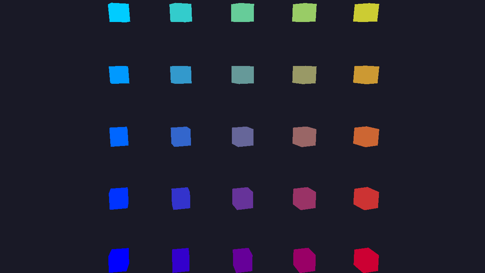

Indirect Drawing
In this tutorial, you'll render a 5×5 grid of spinning cubes using indirect drawing and GPU instancing. This introduces indirect draw buffers, structured buffers for per-instance data, and shows how to drive draw calls from GPU-accessible memory.
Overview
This tutorial covers:
- Creating an indirect draw buffer with
IndirectDrawIndexedArgs - Using a structured buffer to store per-instance transforms and colors
- Updating instance data per-frame for independent animations
- Issuing a single
DrawIndexedIndirectcall to render all instances - Setting up view/projection matrices in
Resizefor window-independent rendering
The Renderer Class
Create the file Renderers/IndirectDrawingRenderer.cs:
namespace ZenithTutorials.Renderers;
internal unsafe class IndirectDrawingRenderer : IRenderer
{
private const int InstanceCount = 25;
private const string ShaderSource = """
struct VSInput
{
float3 Position : POSITION0;
float4 Color : COLOR0;
uint InstanceID : SV_InstanceID;
};
struct PSInput
{
float4 Position : SV_POSITION;
float4 Color : COLOR;
};
struct Constants
{
float4x4 View;
float4x4 Projection;
};
struct Instance
{
float4x4 Model;
float4 Color;
};
ConstantBuffer<Constants> constants;
StructuredBuffer<Instance> instances;
PSInput VSMain(VSInput input)
{
Instance instance = instances[input.InstanceID];
float4 worldPos = mul(float4(input.Position, 1.0), instance.Model);
float4 viewPos = mul(worldPos, constants.View);
PSInput output;
output.Position = mul(viewPos, constants.Projection);
output.Color = input.Color * instance.Color;
return output;
}
float4 PSMain(PSInput input) : SV_TARGET
{
return input.Color;
}
""";
private readonly Buffer vertexBuffer;
private readonly Buffer indexBuffer;
private readonly Buffer indirectBuffer;
private readonly Buffer constantsBuffer;
private readonly Buffer instanceBuffer;
private readonly ResourceLayout resourceLayout;
private readonly ResourceTable resourceTable;
private readonly GraphicsPipeline pipeline;
private float rotationAngle;
public IndirectDrawingRenderer()
{
Vertex[] vertices =
[
new(new(-0.5f, -0.5f, 0.5f), new(1.0f, 1.0f, 1.0f, 1.0f)),
new(new( 0.5f, -0.5f, 0.5f), new(1.0f, 1.0f, 1.0f, 1.0f)),
new(new( 0.5f, 0.5f, 0.5f), new(1.0f, 1.0f, 1.0f, 1.0f)),
new(new(-0.5f, 0.5f, 0.5f), new(1.0f, 1.0f, 1.0f, 1.0f)),
new(new(-0.5f, -0.5f, -0.5f), new(1.0f, 1.0f, 1.0f, 1.0f)),
new(new( 0.5f, -0.5f, -0.5f), new(1.0f, 1.0f, 1.0f, 1.0f)),
new(new( 0.5f, 0.5f, -0.5f), new(1.0f, 1.0f, 1.0f, 1.0f)),
new(new(-0.5f, 0.5f, -0.5f), new(1.0f, 1.0f, 1.0f, 1.0f))
];
uint[] indices =
[
0, 1, 2, 0, 2, 3,
5, 4, 7, 5, 7, 6,
4, 0, 3, 4, 3, 7,
1, 5, 6, 1, 6, 2,
3, 2, 6, 3, 6, 7,
4, 5, 1, 4, 1, 0
];
vertexBuffer = App.Context.CreateBuffer(new()
{
SizeInBytes = (uint)(sizeof(Vertex) * vertices.Length),
StrideInBytes = (uint)sizeof(Vertex),
Flags = BufferUsageFlags.Vertex | BufferUsageFlags.MapWrite
});
vertexBuffer.Upload(vertices, 0);
indexBuffer = App.Context.CreateBuffer(new()
{
SizeInBytes = (uint)(sizeof(uint) * indices.Length),
StrideInBytes = sizeof(uint),
Flags = BufferUsageFlags.Index | BufferUsageFlags.MapWrite
});
indexBuffer.Upload(indices, 0);
indirectBuffer = App.Context.CreateBuffer(new()
{
SizeInBytes = (uint)sizeof(IndirectDrawIndexedArgs),
StrideInBytes = (uint)sizeof(IndirectDrawIndexedArgs),
Flags = BufferUsageFlags.Indirect | BufferUsageFlags.MapWrite
});
indirectBuffer.Upload([new IndirectDrawIndexedArgs()
{
IndexCount = (uint)indices.Length,
InstanceCount = InstanceCount,
FirstIndex = 0,
VertexOffset = 0,
FirstInstance = 0
}], 0);
constantsBuffer = App.Context.CreateBuffer(new()
{
SizeInBytes = (uint)sizeof(Constants),
StrideInBytes = (uint)sizeof(Constants),
Flags = BufferUsageFlags.Constant | BufferUsageFlags.MapWrite
});
Resize(App.Width, App.Height);
instanceBuffer = App.Context.CreateBuffer(new()
{
SizeInBytes = (uint)(sizeof(Instance) * InstanceCount),
StrideInBytes = (uint)sizeof(Instance),
Flags = BufferUsageFlags.ShaderResource | BufferUsageFlags.MapWrite
});
resourceLayout = App.Context.CreateResourceLayout(new()
{
Bindings = BindingHelper.Bindings
(
new() { Type = ResourceType.ConstantBuffer, Count = 1, StageFlags = ShaderStageFlags.Vertex },
new() { Type = ResourceType.StructuredBuffer, Count = 1, StageFlags = ShaderStageFlags.Vertex }
)
});
resourceTable = App.Context.CreateResourceTable(new()
{
Layout = resourceLayout,
Resources = [constantsBuffer, instanceBuffer]
});
InputLayout inputLayout = new();
inputLayout.Add(new() { Format = ElementFormat.Float3, Semantic = ElementSemantic.Position });
inputLayout.Add(new() { Format = ElementFormat.Float4, Semantic = ElementSemantic.Color });
using Shader vertexShader = App.Context.LoadShaderFromSource(ShaderSource, "VSMain", ShaderStageFlags.Vertex);
using Shader pixelShader = App.Context.LoadShaderFromSource(ShaderSource, "PSMain", ShaderStageFlags.Pixel);
pipeline = App.Context.CreateGraphicsPipeline(new()
{
RenderStates = new()
{
RasterizerState = RasterizerStates.CullBack,
DepthStencilState = DepthStencilStates.Default,
BlendState = BlendStates.Opaque
},
Vertex = vertexShader,
Pixel = pixelShader,
ResourceLayout = resourceLayout,
InputLayouts = [inputLayout],
PrimitiveTopology = PrimitiveTopology.TriangleList,
Output = App.FrameBuffer.Output
});
}
public void Update(double deltaTime)
{
rotationAngle += (float)deltaTime;
Instance[] instances = new Instance[InstanceCount];
int index = 0;
int gridSize = (int)Math.Sqrt(InstanceCount);
for (int y = 0; y < gridSize; y++)
{
for (int x = 0; x < gridSize; x++)
{
float offsetX = (x - (gridSize / 2)) * 1.5f;
float offsetY = (y - (gridSize / 2)) * 1.5f;
float rotation = rotationAngle * (1.0f + (index * 0.1f));
instances[index] = new()
{
Model = Matrix4x4.CreateScale(0.4f)
* Matrix4x4.CreateRotationY(rotation)
* Matrix4x4.CreateRotationX(rotation * 0.5f)
* Matrix4x4.CreateTranslation(offsetX, offsetY, 0),
Color = new((float)x / gridSize, (float)y / gridSize, 1.0f - ((float)x / gridSize), 1.0f)
};
index++;
}
}
instanceBuffer.Upload(instances, 0);
}
public void Render()
{
CommandBuffer commandBuffer = App.Context.Graphics.CommandBuffer();
commandBuffer.BeginRenderPass(App.FrameBuffer, new()
{
ColorValues = [new(0.1f, 0.1f, 0.15f, 1.0f)],
Depth = 1.0f,
Stencil = 0,
Flags = ClearFlags.All
}, resourceTable);
commandBuffer.SetPipeline(pipeline);
commandBuffer.SetResourceTable(resourceTable);
commandBuffer.SetVertexBuffer(vertexBuffer, 0, 0);
commandBuffer.SetIndexBuffer(indexBuffer, 0, IndexFormat.UInt32);
commandBuffer.DrawIndexedIndirect(indirectBuffer, 0, 1);
commandBuffer.EndRenderPass();
commandBuffer.Submit(waitForCompletion: true);
}
public void Resize(uint width, uint height)
{
Matrix4x4 view = Matrix4x4.CreateLookAt(new(0, 0, 8), Vector3.Zero, Vector3.UnitY);
Matrix4x4 projection = Matrix4x4.CreatePerspectiveFieldOfView(float.DegreesToRadians(45.0f), (float)width / height, 0.1f, 100.0f);
constantsBuffer.Upload([new Constants() { View = view, Projection = projection }], 0);
}
public void Dispose()
{
pipeline.Dispose();
resourceTable.Dispose();
resourceLayout.Dispose();
instanceBuffer.Dispose();
constantsBuffer.Dispose();
indirectBuffer.Dispose();
indexBuffer.Dispose();
vertexBuffer.Dispose();
}
}
[StructLayout(LayoutKind.Sequential)]
file struct Vertex(Vector3 position, Vector4 color)
{
public Vector3 Position = position;
public Vector4 Color = color;
}
[StructLayout(LayoutKind.Explicit, Size = 128)]
file struct Constants
{
[FieldOffset(0)]
public Matrix4x4 View;
[FieldOffset(64)]
public Matrix4x4 Projection;
}
[StructLayout(LayoutKind.Explicit, Size = 80)]
file struct Instance
{
[FieldOffset(0)]
public Matrix4x4 Model;
[FieldOffset(64)]
public Vector4 Color;
}
Running the Tutorial
Run the application and select 5. Indirect Drawing from the menu:
dotnet run
Result

Code Breakdown
Shader
The vertex shader reads per-instance data from a StructuredBuffer:
ConstantBuffer<Constants> constants;
StructuredBuffer<Instance> instances;
PSInput VSMain(VSInput input)
{
Instance instance = instances[input.InstanceID];
float4 worldPos = mul(float4(input.Position, 1.0), instance.Model);
float4 viewPos = mul(worldPos, constants.View);
PSInput output;
output.Position = mul(viewPos, constants.Projection);
output.Color = input.Color * instance.Color;
return output;
}
SV_InstanceID provides the instance index, used to look up the per-instance model matrix and color from the structured buffer.
Indirect Draw Buffer
The draw arguments are stored in a GPU buffer instead of being passed as CPU parameters:
indirectBuffer = App.Context.CreateBuffer(new()
{
SizeInBytes = (uint)sizeof(IndirectDrawIndexedArgs),
StrideInBytes = (uint)sizeof(IndirectDrawIndexedArgs),
Flags = BufferUsageFlags.Indirect | BufferUsageFlags.MapWrite
});
indirectBuffer.Upload([new IndirectDrawIndexedArgs()
{
IndexCount = (uint)indices.Length,
InstanceCount = InstanceCount,
FirstIndex = 0,
VertexOffset = 0,
FirstInstance = 0
}], 0);
IndirectDrawIndexedArgs mirrors the standard GPU indirect draw structure. Using DrawIndexedIndirect instead of DrawIndexed allows the GPU to read draw parameters from a buffer, enabling GPU-driven rendering scenarios.
Structured Buffer
Per-instance data (model matrix + color) is uploaded to a structured buffer each frame:
instanceBuffer = App.Context.CreateBuffer(new()
{
SizeInBytes = (uint)(sizeof(Instance) * InstanceCount),
StrideInBytes = (uint)sizeof(Instance),
Flags = BufferUsageFlags.ShaderResource | BufferUsageFlags.MapWrite
});
The Instance struct is 80 bytes — a 64-byte Matrix4x4 plus a 16-byte Vector4:
[StructLayout(LayoutKind.Explicit, Size = 80)]
file struct Instance
{
[FieldOffset(0)]
public Matrix4x4 Model;
[FieldOffset(64)]
public Vector4 Color;
}
Per-Instance Animation
Each cube gets a unique rotation speed and color based on its grid position:
instances[index] = new()
{
Model = Matrix4x4.CreateScale(0.4f)
* Matrix4x4.CreateRotationY(rotation)
* Matrix4x4.CreateRotationX(rotation * 0.5f)
* Matrix4x4.CreateTranslation(offsetX, offsetY, 0),
Color = new((float)x / gridSize, (float)y / gridSize, 1.0f - ((float)x / gridSize), 1.0f)
};
View/Projection in Resize
View and projection matrices are set in Resize rather than Update, since the camera is static and only the aspect ratio changes:
public void Resize(uint width, uint height)
{
Matrix4x4 view = Matrix4x4.CreateLookAt(new(0, 0, 8), Vector3.Zero, Vector3.UnitY);
Matrix4x4 projection = Matrix4x4.CreatePerspectiveFieldOfView(float.DegreesToRadians(45.0f), (float)width / height, 0.1f, 100.0f);
constantsBuffer.Upload([new Constants() { View = view, Projection = projection }], 0);
}
Next Steps
- Ray Tracing - Cast rays with hardware acceleration structures
Source Code
Tip
View the complete source code on GitHub: IndirectDrawingRenderer.cs